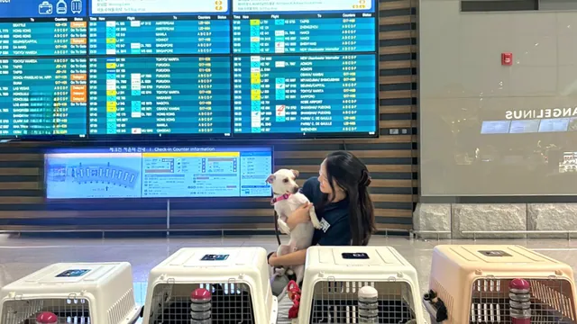

봉사 참여
구조된 아이는 현장에서 병원으로, 병원에서 임시보호 가정으로, 해외 입양이 정해지면 공항으로 이동합니다. 이동봉사와 임시보호로 아이가 가족을 만날 때까지 함께해 주세요.
해외 이동봉사
미국 · 캐나다 출국자
대한항공, 아시아나, 에어캐나다를 통해 미국, 캐나다로 출국하는 탑승객을 찾습니다. 위액트 구조견들은 주로 중대형견들로, 소형견을 선호하는 한국에서는 입양 기회가 많지 않아 해외 입양만이 가족을 찾는 유일한 기회일 때가 많습니다.
구조견들의 출국에 필요한 서류와 비용은 모두 위액트가 준비합니다. 봉사자님께서는 계획하신 시간보다 딱 30분만 더 일찍 공항에 와 주시면 충분합니다.
국내 이동봉사
자가용 · 대중교통 · 국내선
이동봉사는 구조에 있어 가장 중요한 부분 중 하나입니다. 구조 현장에서 병원으로, 병원에서 임시보호 가정 또는 센터로, 그리고 해외입양이 필요한 경우 공항으로 이동하게 됩니다.
자가용을 이용한 이동이 가장 많지만 기차, 버스와 같은 대중교통, 그리고 국내선(비행기)을 통해서도 이동봉사가 가능합니다. 위액트 단체 카톡방에 참여하셔서 가능한 이동에 지원해 주세요.